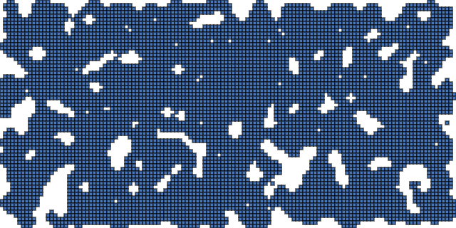

マップ生成2
実行例
 実行結果を見る
ソースコード
解説/アルゴリズム
- 二次元配列を用意する。
- 配列の中身を、x% の確率で島の値、 (100-x%) の確率で海の値になるように埋めていく。
- 縦横サイズを超えないランダムな (x, y) 位置を取得する。
- (x, y) 位置にある、セルの周り 3x3 の海の数を数える。（自身のセルも含める）
- 3x3 の海の数が a 未満なら、 (x, y) 位置のセルを海に、そうでなければ島に変える。
- 上記 3 ～ 5 を n 回繰り返す。
- 配列の値をもとに描画を行う。
コード解説
配列の初期化
map = [];
for (let y = 0; y < tileHeight; y++) {
map[y] = [];
for (let x = 0; x < tileWidth; x++) {
map[y][x] = p.random(1.0) < fillProbability ? CellType.land : CellType.sea;
}
}
配列の中身を、x% の確率で島の値、 (100-x)% の確率で海の値になるように埋めていく。
壁の数を数える
const tx = p.floor(p.random(tileWidth));
const ty = p.floor(p.random(tileHeight));
map[ty][tx] = 4 < getNeighborSeaCount(tx, ty) ? CellType.sea : CellType.land;
ランダムな位置を取得する。
その位置にあるセルの周り 3x3 にある海の数をカウントする。（自身もカウントに含める）
海の数が a 以上であればそのセルを海に、でなければ島に変換する。